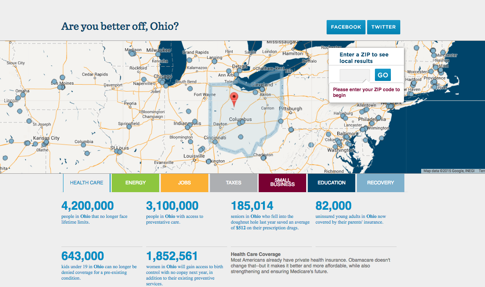
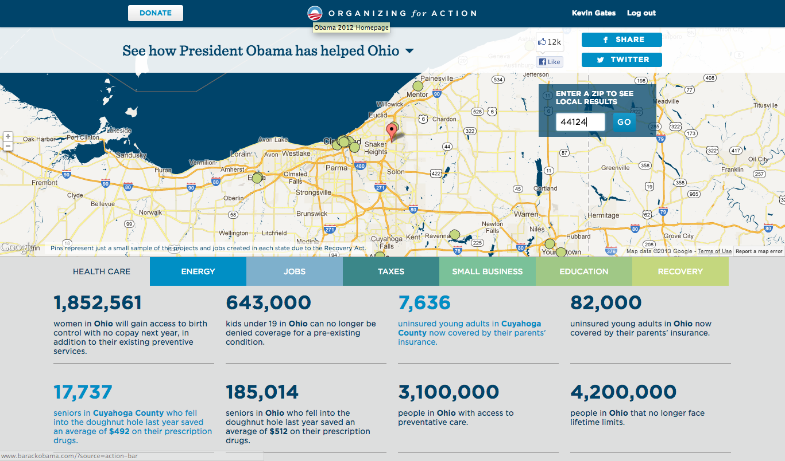

Using Twitter's Bootstrap UI framework, I was able to simultaneously design for tablets and phones, helping us keep to a very tight timeline.

An early version with all the working components. The app detects where the user is located and supplies talking points relevant to them across key policy areas.

The final version of the app after the branding team's work.